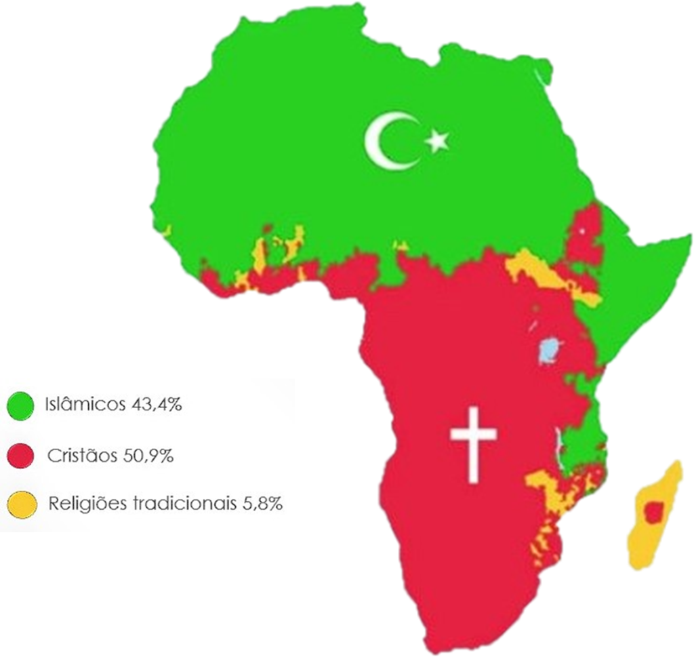

População
Vivem no continente Africano mais de um bilhão de habitantes. No entanto e apesar do alto contingente, a África apresenta destribuição desigual da população,devido as condições Geográficas que desfavorecem a ocupação das áreas
Idiomas
Há uma grande diversidade cultural no continente, o qual possui várias etnias,tradições,religiões, e línguas.Além das milhares de línguas africanas,falam-se mais línguas tradizas pelos colonizadores, como o Francês, Inglês, e Português. O português é falada por cinco países: Cabo Verde,Guiné-Bissau,São Tomé e Príncipe, Moçambique e Angola.
Religião

Pela foto podemos ver que África está principalmente devidida por duas religiões,cristã com 50.9% e islâmicas com 43.3% o resto são religiões tradicionais.